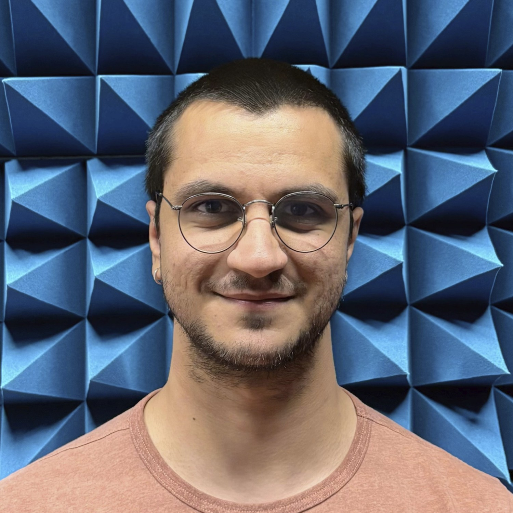

2026
End-to-End Co-Design of MIMO Arrays and Reconstruction Methods for Radar Imaging
O. Oral, F.S. Oktem · Digital Signal Processing · 2026

Ph.D. ResearcherI am a Ph.D. student in the Signal Processing Applications for Communications and Radar (SPARC) research group at the University of Luxembourg – SnT, under the supervision of Prof. Dr. Bhavani Shankar. My research focuses on radar-based computational sensing and imaging, fast memory-efficient algorithms, and physics-informed deep learning.
For a complete list of publications, please see my Google Scholar profile .
O. Oral, F.S. Oktem · Digital Signal Processing · 2026
O. Oral, T. Feuillen, A. Murtada, B. Shankar · IEEE RadarConf · 2025
O. Oral, F.S. Oktem · IEEE Transactions on Computational Imaging · 2024
I. Manisali, O. Oral, F.S. Oktem · Digital Signal Processing · 2024